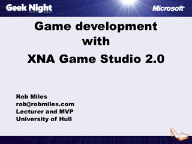

ASP.NET MVC Framework
Speaker(s): Alex Thissen
Game Development with XNA Game Studio 2.0

Speaker(s): Rob Miles
Flight Simulator Secrets Exposed: The Microsoft ESP Visual Simulation Platform
Speaker(s): Arno Gerretsen
The Magic of Game Development
Speaker(s): Mark Overmars
XNA Games in Academia
Speaker(s): Remco Huijser